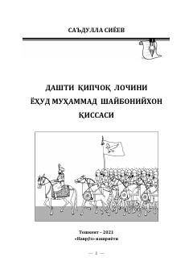

DQMuhammad Shayboniyxon hayoti va faoliyatiga bag'ishlangan tarixiy qissa.
Ushbu asar o'zbek davlatchiligi tarixida muhim o'rin tutgan Muhammad Shayboniyxon hayoti va faoliyatiga bag'ishlangan tarixiy qissadir. Muallif Shayboniylar sulolasi asoschisining murakkab taqdiri, uning islohotlari va mamlakat taraqqiyoti yo'lidagi sa'y-harakatlarini badiiy tilda yoritib beradi.